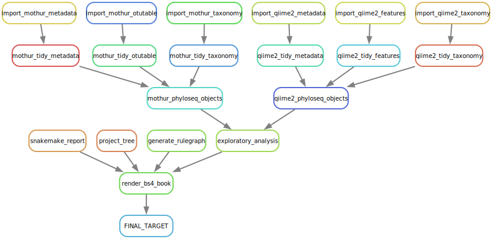

1 Data Tidying
1.1 General snakemake workflow

A tentative snakemake workflow that defines data processing rules in a DAG (directed acyclic graph) format. A detailed interactive snakemake HTML report is available here. Use a wider screen to get a better interactive snakemake report.
1.2 Data Tidying
Requires:
- Sample metadata
- OTU tables from
mothurandqiime2pipelines. - Taxonomy tables from
mothurandqiime2pipelines.
1.3 Microbiome composite R objects
Requires:
- Tidy sample metadata.
- Tidy OTU tables.
- Tidy taxonomy tables.
The mothur and qiime2 composite objects are in a long-format which is suitable for most types of data visualization.
1.4 Microbioma phyloseq objects
Requires:
- A
phyloseqpackage - Tidy sample metadata.
- Tidy OTU tables.
- Tidy taxonomy tables.
1.5 Data transformation
Requires:
- A
phyloseqpackage - A
microbiomepackage - Phyloseq objects
Data transformation is intended to converting the values into ready-to-use matrices. There are different methods out there, and here are just a few:
- No transformation is similar to raw abundance.
- Compositional version or relative abundance.
- Arc sine (asin) transformation.
- Z-transform for OTUs.
- Z-transform for Samples.
- Log10 transformation.
- Log10p transformation,
- CLR transformation.
- Shift the baseline.
- Data Scaling.
1.6 Data reduction
Dimensionality reduction is intended to reduce the dimension of the variables but keeping as much of the variation as possible. , and includes:
- Linear methods (commonly used in microbiome data analysis)
- PCA (Principal Component Analysis)
- Factor Analysis
- LDA (Linear Discriminant Analysis)
- More here.
- Non-linear methods